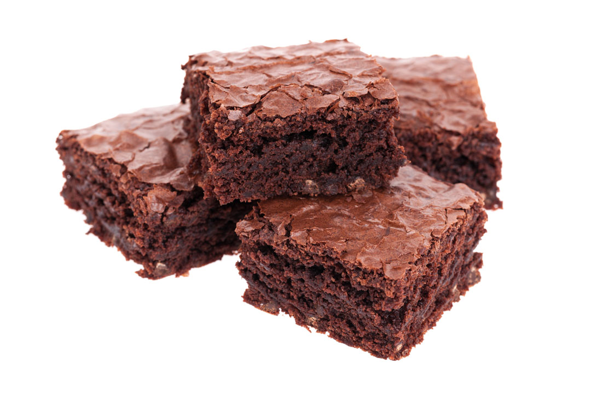

Deep Dish Brownies

Recipe by: Biz McMahon
Prep Time : 60 mins
Servings :
9
Ingredients
- 3/4 cup butter, melted
- 1 1/2 cups white sugar
- 3 eggs
- 3/4 cup all-purpose flour
- 1/2 cup unsweetened cocoa powder
- 1/2 teaspoon baking powder
- 1/2 teaspoon salt
Directions
- Preheat oven to 350 degrees F (175 degrees C) and Grease an 8 inch square pan.
- In a large bowl, blend melted butter, sugar and vanilla.
- Beat in eggs one at a time.
- Combine the flour, cocoa, baking powder and salt. Gradually blend into the egg mixture.
- Spread the batter into the prepared pan.
- Bake in preheated oven for 40 to 45 minutes, or until brownies begin to pull away from the sides of the pan.
- Let brownies cool, then cut into squares. Enjoy!
Tip
Aluminum foil can be used to keep food moist, cook it evenly, and make clean-up easier.
Nutritional Info
340 cals